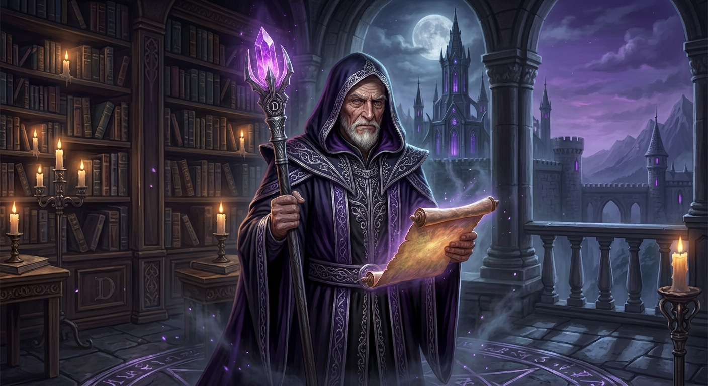
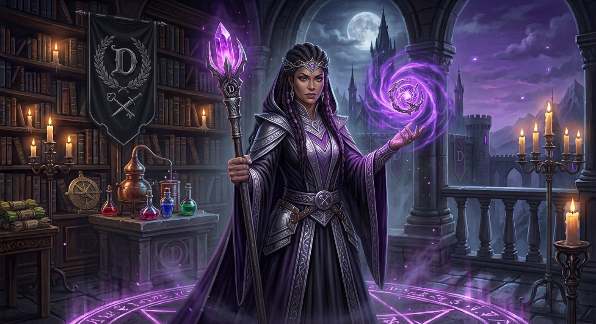
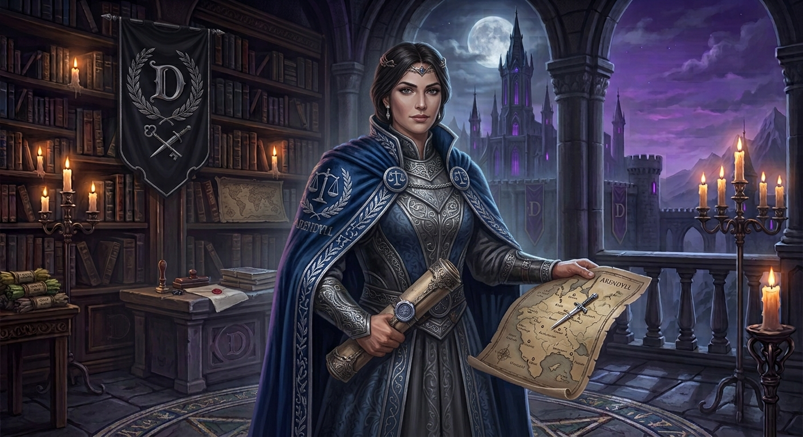
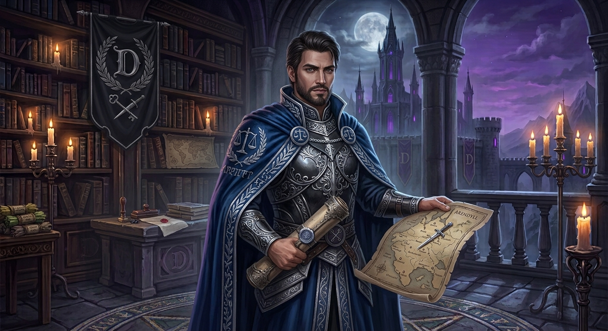

Cuando la Primera Era de Prueba colapsó, y las efímeras alianzas de la Beta se fragmentaron hasta volverse polvo, una nueva estirpe de almas resurgió con un propósito único. Así nacimos, DESTIERRO.
Nos retiramos a los territorios sagrados y ancestrales de ARENDYLL, donde forjamos un refugio. Somos más que un gremio; somos un verdadero oasis de lealtad, y nuestro estandarte ondea bajo un juramento inquebrantable:
"Jugar por y para la gloria y el beneficio mutuo de nuestra hermandad."
Las mentes maestras que guían los destinos de nuestra hermandad a través de Arendyll, velando por el cumplimiento de las leyes y el progreso común.

Archimago Supremo
Nacido del pacto abisal entre la magia antigua y las sombras de la Beta, Sidragaso ostenta la corona de espinas del mando. Portador del tomo primordial, su voluntad rige los destinos de Destierro con mano firme y visión profética. No busca el dominio absoluto por vanidad, sino la preservación eterna de la estirpe exiliada en Arendyll.

Hechicera Suprema y Bruja Guardiana
Custodia de las reliquias arcanas y ojo vigilante de Destierro. Poseedora del don de la vista más allá del velo, Syltyn teje las artes místicas de la hermandad y juzga la devoción de cada alma. Su orbe violeta revela la verdad en el corazón de los miembros; la lealtad encuentra en ella bendición y fuerza, mientras que la falsedad topa con la sentencia del exilio.

Embajadora y Canciller del Pacto
La voz serena y la pluma afilada de Destierro en Arendyll. Trova forja las alianzas de la hermandad y custodia las rutas comerciales de la Lonja. Su dominio de los pergaminos antiguos y la diplomacia garantiza que los pactos de comercio equitativo se cumplan con precisión, abriendo los caminos del reino para la gloria y el progreso de los nuestros.

Embajador y Custodio de las Filas
El martillo de la disciplina y el estratega de reclutamiento en Destierro. Rigober explora las tierras de Arendyll en busca de almas activas y guerreros verdaderos para integrarlos al culto. Guardián de la comunicación interna, asegura que cada miembro responda al llamado del Alto Concilio y marche en sintonía durante las grandes Cruzadas.
Los relatos arcanos de quienes guían el destino de los Desterrados en Arendyll.
Mucho antes de que el estandarte de DESTIERRO ondeara en los cielos de Arendyll, cuando los primeros reinos se colapsaban bajo el peso de la traición y la ruina, una chispa demoníaca despertó en el abismo. De entre los vestigios de la magia prohibida emergió Sidragaso.
Conocido por los antiguos como el Gran Estratega del Pacto Arcano, Sidragaso no gobierna mediante el temor infundado, sino a través de la sabiduría del fuego eterno y la disciplina de la guerra. Es el custodio de los Edictos y el guardián de la llama viva de la hermandad. Bajo su estandarte negro y plateado, los caídos encuentran refugio y los leales, gloria inmortal. Quien camina a su lado cuenta con el escudo de un titán; quien osa desafiar su pacto, solo encuentra el exilio eterno.
Mientras el Archimago Sidragaso rige la estrategia y el destino terrenal de DESTIERRO, Syltyn habita en la penumbra del santuario arcano, canalizando la energía primordial que sostiene las defensas místicas del reino en Arendyll.
Surgida de las nieblas antiguas del cataclismo, es el alma hechicera que vela por la pureza de vuestros votos. En sus manos descansa el orbe de las almas, capaz de avistar la traición antes de que germine. Para los caídos y leales, Syltyn es el faro que guía el poder del Torneo y la Torre Arcana; para los impíos que intenten eludir los Edictos Sagrados, ella es la bruja implacable cuyo juicio sentencia al verdadero y permanente exilio.
Más allá de la magia oscura y los campos de batalla del Torneo, el destino de DESTIERRO también se teje con estrategia y diplomacia. En el centro de las negociaciones se halla Trova, la Embajadora cuya palabra sostiene el equilibrio comercial y el renombre del gremio.
Portadora de los mapas arcanos y las misivas de alianza, Trova es el puente entre los territorios sagrados de nuestra hermandad y el resto de Arendyll. Bajo su tutela, el comercio justo florece en la Lonja y los nuevos guerreros encuentran su rumbo hacia el refugio de los exiliados. Su firmeza asegura que ningún pacto firmado bajo el sello de Destierro sea quebrantado.
Para que la llama de DESTIERRO jamás se apague en Arendyll, se requiere la mirada atenta de quien mide el valor y el compromiso de las tropas. Ese deber recae sobre Rigober, el Embajador encargado de fortalecer la estructura interna de la hermandad.
Rigober peina los reinos en busca de almas valientes que busquen refugio y gloria, asegurándose de que solo los más dedicados crucen el umbral de nuestra orden. Con mano firme y lealtad inquebrantable, vela por la actividad de los guerreros y la fluidez del Códice de Comunicaciones, garantizando que el ejército de exiliados permanezca unido frente a cualquier batalla.